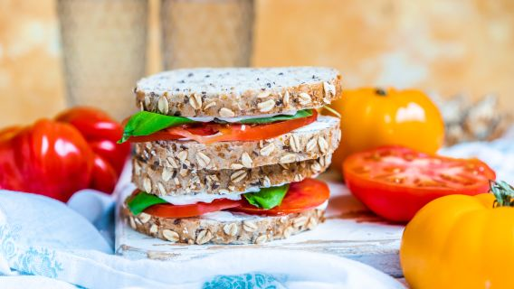

PEANUT BUTTER AND JELLY SANDWICH
DIRECTIONS
- 1. Spread the peanut butter on one piece of bread.
- 2. Spread the jelly on the other side.
- 3. Put the two pieces of bread together to form a sandwich.
- 4. Toddler adaptation: cut off crusts before serving.
INGREDIENTS
- * 2 slices sandwich bread
- * 2 tablespoons peanut butter
- * 2 teaspoons grape jelly or 2 teaspoons strawberry jam

SIMPLE TOMATO SANDWICH
DIRECTIONS
- 1. Toast bread.
- 2. Slice tomato.
- 3. When bread is adequately toasted, liberally spread both sides with Miracle Whip (or butter one side with Miracle Whip on the other).
- 4. Lay tomato slices on one side of bread.
- 5. Salt tomato to taste.
INGREDIENTS
- * 2 slices bread (homemade strongly recommended, cracked wheat is my specific favorite)
- * 1 medium organic tomatoes or 1 medium garden tomatoes (room temperature or fresh from the stalk, do NOT attempt this with pale, store-bought types!)
- * 3 tablespoons Miracle Whip or 3 tablespoons mayonnaise/li>
- * salt and pepper

CHICKEN SALAD SANDWICHES
DIRECTIONS
- 1. Place chicken, celery stalk and onion in saucepan with water to cover.
- 2. Bring to a boil and simmer 20 minutes or until chicken is done..
- 3. Drain and discard onion and celery.
- 4. Let chicken cool.
- 5. In a food processor chop chicken.
- 6. In a medium sized bowl combine chicken with mayonnaise, salt& pepper, parsley, dill seed, chopped celery and lemon juice
- 7. Cover and refrigerate until chilled.
INGREDIENTS
- * 2 whole boneless chicken breasts
- * 1 stalk celery,
- * 1 nion, quarteredd
- * 1 or 2 cups mayonnaise
- * 2 tablespoons lemon juice
- * 2 tablespoons fresh parsley, chopped
- * 1 teaspoon dill seed
- * salt and pepper